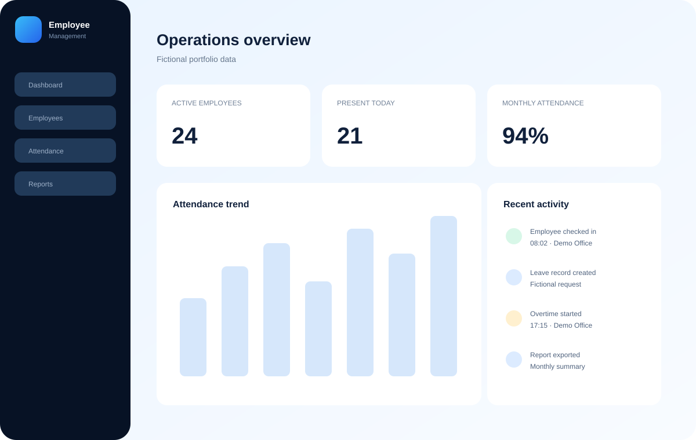
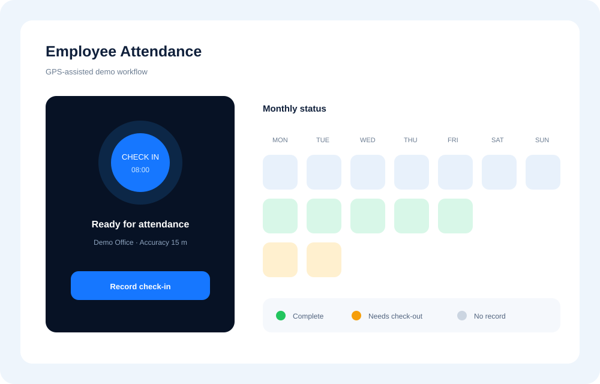
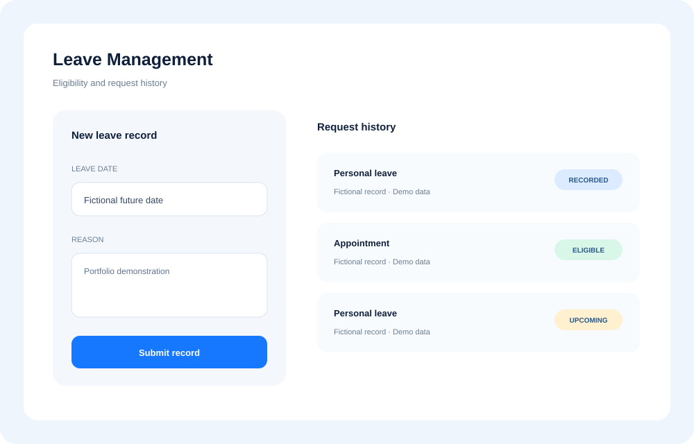

Secure access
Email/username login, active-account enforcement, password recovery, optional two-factor authentication, roles, and granular permissions.
Full-stack employee operations
A responsive Laravel and Vue application for employee records, GPS-assisted attendance, leave, overtime, operational reporting, and daily-pay calculations.
Static showcase only. The Laravel backend runs locally with PHP and MySQL.

Sanitized UI placeholderProject overview
Attendance logs, employee profiles, leave records, and overtime details are difficult to audit when they live in separate tools. This application centralizes those workflows and applies role-based access for administrators and employees.
The portfolio version keeps the real implemented modules while replacing internal identity, data, configuration, and imagery with generic local-demo content.
Key features
Email/username login, active-account enforcement, password recovery, optional two-factor authentication, roles, and granular permissions.
Searchable employee profiles with employment status, position, compensation type, and administrative CRUD workflows.
GPS-assisted check-in/check-out with accuracy, IP, user-agent metadata, throttling, history, and monthly summaries.
Leave eligibility and history plus overtime start/finish records with location metadata and operational safeguards.
Daily, per-employee, and monthly reporting with PDF and Excel export paths.
Daily-pay calculations combine completed attendance, leave rules, and overtime detail into a printable summary.
Workflow previews


Replace docs/assets/images/placeholder-*.svg with sanitized application screenshots before publishing the portfolio.
Architecture
Inertia connects Laravel routes and controllers to Vue pages. Reusable payroll and attendance calculations live in service classes, shared business rules live in support classes, and Eloquent provides data access.
Application modules
Only source-verified capabilities are presented.
Technology stack
Developer contribution
The implementation demonstrates full-stack workflow design, hybrid role/permission migration, attendance hardening, reusable recap and payroll calculations, responsive Vue composition, export workflows, and test coverage around authentication and attendance rules.
The public preparation adds safe local fixtures, neutral branding, configuration hardening, a backend-independent showcase, and transparent limitation notes.
Run locally
Use MySQL and follow the full setup in the repository README. GitHub Pages hosts this showcase only; it cannot execute Laravel.
composer install
npm ci
cp .env.example .env
php artisan key:generate
php artisan migrate:fresh --seed
npm run build
php artisan serve